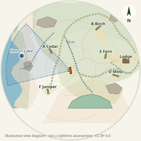

Permanent home · One container · simple · Cabin A concept
Cabin C · Pine
A quiet room in the pines, with a long view west between trunks.
Share this home: homes/Pine-1-simple/ · orientation · main view · siting

- Use
- Permanent home
- Approximate size
- ~27 m² clear floor area · ~36 m² footprint
- Principal facade
- south · ~262°
- Placed
- 165 m east, 135 m south of the fictional map origin
- Shoreline
- ~96 m
- Wetland
- ~46 m
Orientation #
The porch faces almost due west along a long forest corridor to the lake. The entry and path are on the east side, out of the view.
Main view #
A long view west between pine trunks to a narrow strip of lake, more water than sky. Bearing ~287°, ~101 m to Heron Lake. mostly wooded, with deciduous trees that open the view in winter.
Through mature white pine, hemlock and maple.
Nearby homes #
Cabin A is about 57 m north-west and may be glimpsed through the pines in winter; Cabin E is about 76 m north-east and screened by mixed wood. In the view cone: Cabin A at ~57 m.
Path and entry #
The path leaves the west spine and arrives at the east entry. Bedroom and living windows face west and south, away from it.
Winter #
Pine and hemlock hold their needles, so the long view stays framed but private. Leaf-off reveals more of the lake and the ridge.
Siting #
All illustrative checks pass. These are project assumptions, not legal setbacks or a permit.
- 95.7 m from the shoreline (setback 30 m)
- 46.2 m from the wetland (buffer 30 m)
- Inside the parcel
- 70.2 m from Shore outcrop (buffer 8 m)
- 10.1 m from a drainage channel (buffer 10 m)
- Natural ground slope 5.2% (limit 22%)
- Building bench cut/fill 0.32 m (limit 1.6 m)
- Crane reach 18.4 m (limit 24 m)
- Ramp foot 19.9 m from an emergency or access lane (limit 50 m)
- Entry 3.3 m from a walking path (limit 18 m)
- Ramp foot 4.6 m from a walking path (limit 18 m)
Design note #
The resident might replace the west trellis with a small covered deck. The landscape model accepts that change without moving the home.
Drawings and next steps #
Cabin A concept drawings · Look inside Cabin C · Show Cabin C on the hamlet map · Design Lab
This page is a brief, not a construction drawing. No photograph, stock image or proprietary design is reproduced.